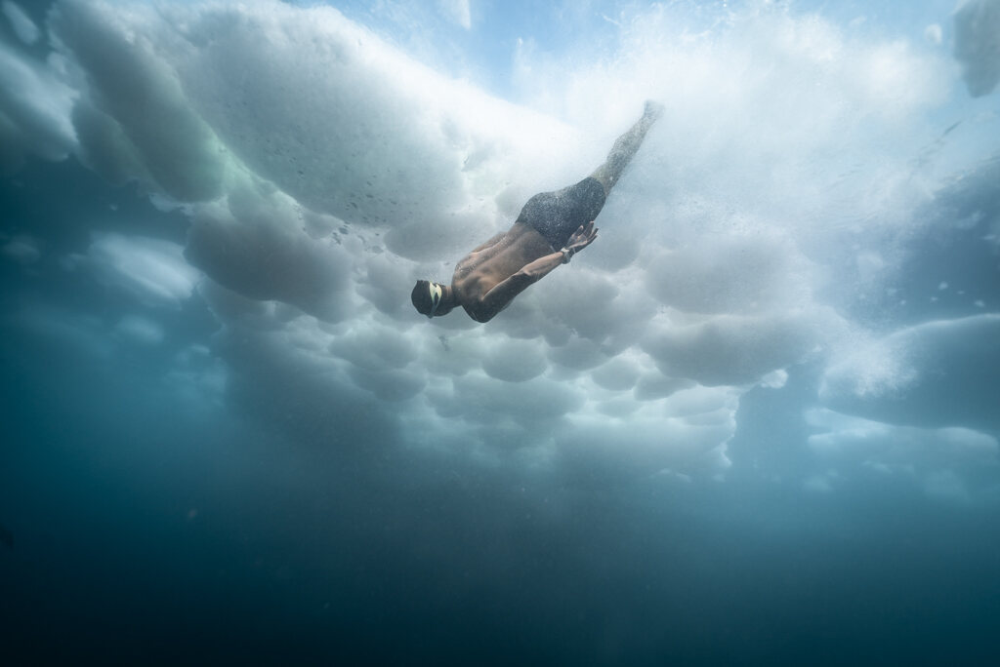
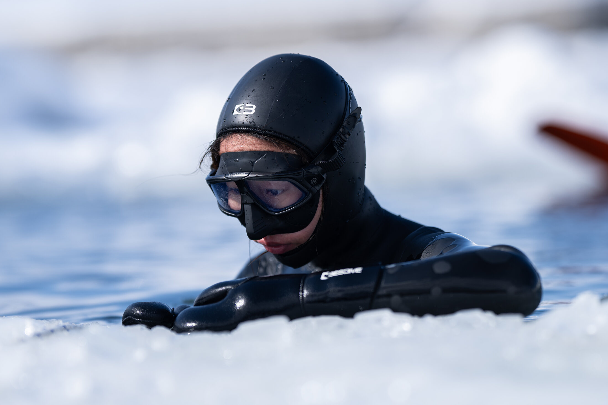
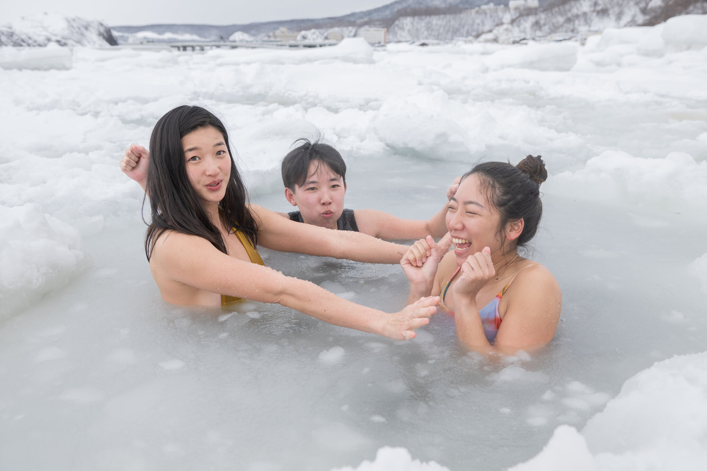
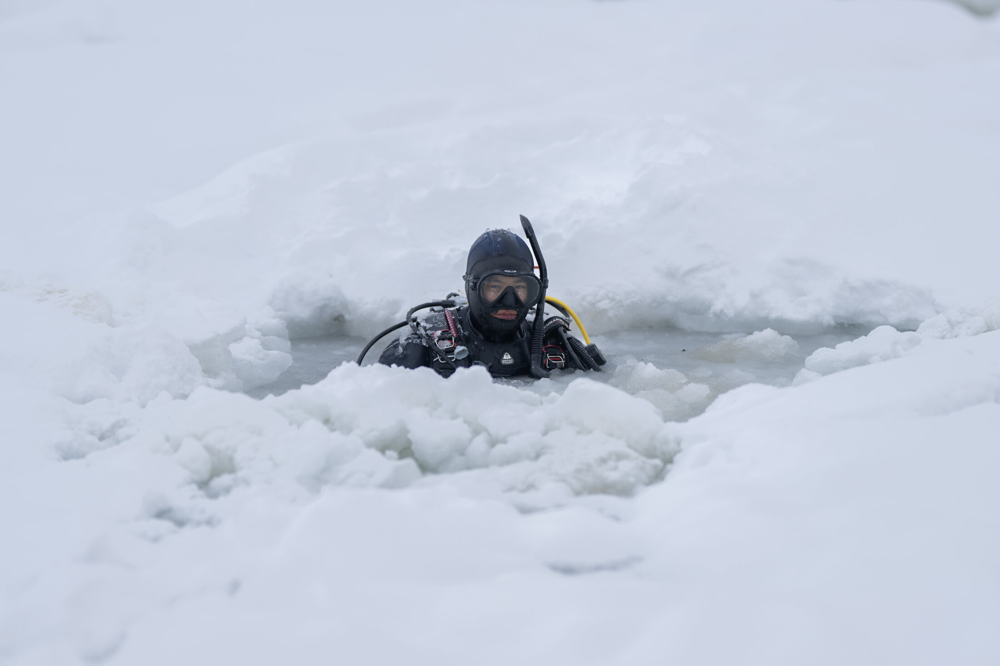
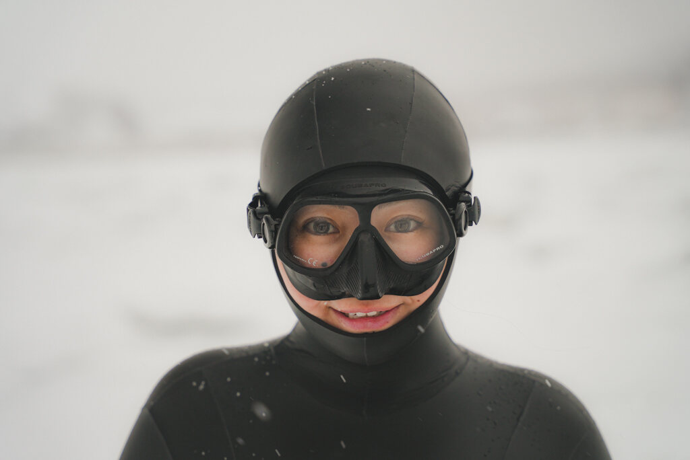
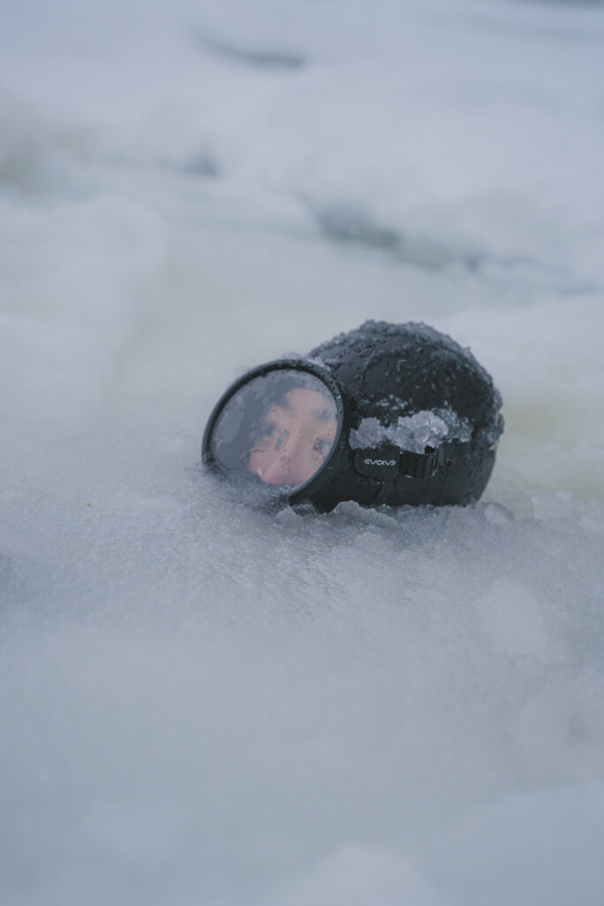
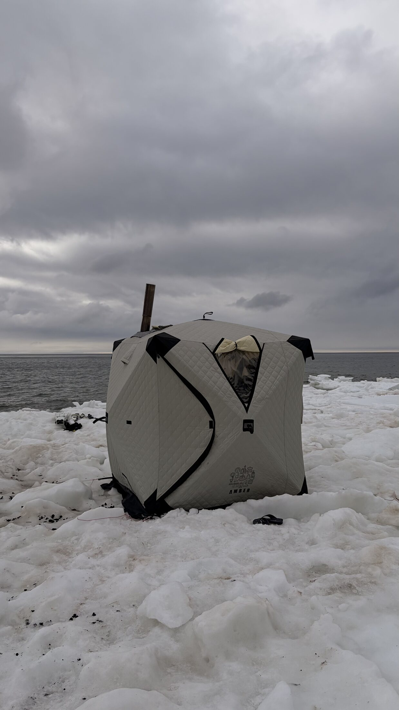
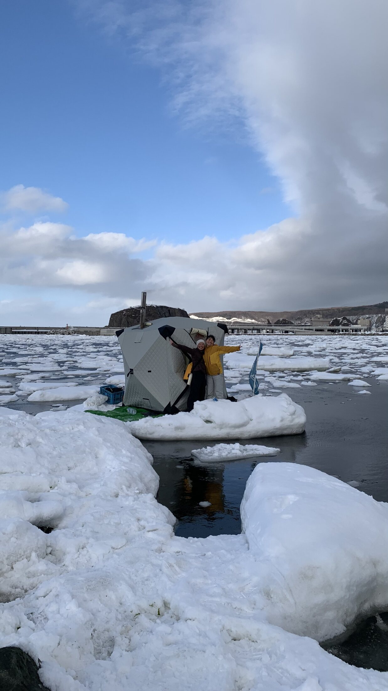
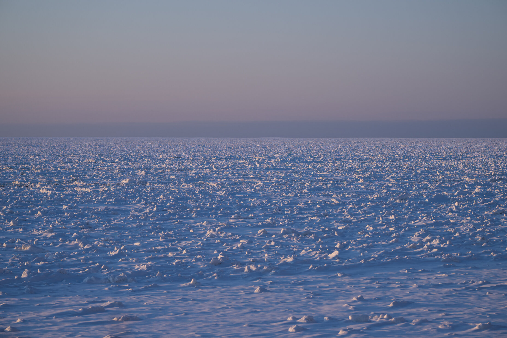

RESULTS & MEDIA
実績・ギャラリー
2024年の世界記録樹立をはじめ、これまでの歩みと、流氷の下で撮影された写真・映像をご紹介します。
2024年の世界記録樹立をはじめ、これまでの歩みと、流氷の下で撮影された写真・映像をご紹介します。
2024年2月22日、知床ウトロ漁港の旧港にて、フリーダイバー尾関靖子選手がダイナミックウィズフィン（ウエットスーツ）種目で126mを泳ぎきりました。この記録はイタリアに本拠地を置く国際競技団体CMASにより公式認定され、あわせてギネス世界記録としても認定されました（翌日、クロアチアの選手が140mを樹立し記録は更新されましたが、海水・不揃いな流氷という過酷な環境下での挑戦として大きな意義を残しました）。
会場設営には数日をかけ、流氷に7つの穴を開けて競技ライン・目視ライン・セーフティラインを設置。CMASジャッジ、水中セーフティダイバー、氷上セーフティ、スキューバチーム、医師など多くのスタッフが参加し、地元の協力のもとで実現しました。
ダイビング総合メディア「Oceana」にて、世界記録アテンプトの舞台裏、主催者・選手インタビューが詳しく紹介されています。
Oceanaで記事を読む →クリックで拡大表示できます。















流氷の下を泳ぐフリーダイバー
潜水の合間にサウナで暖をとる参加者